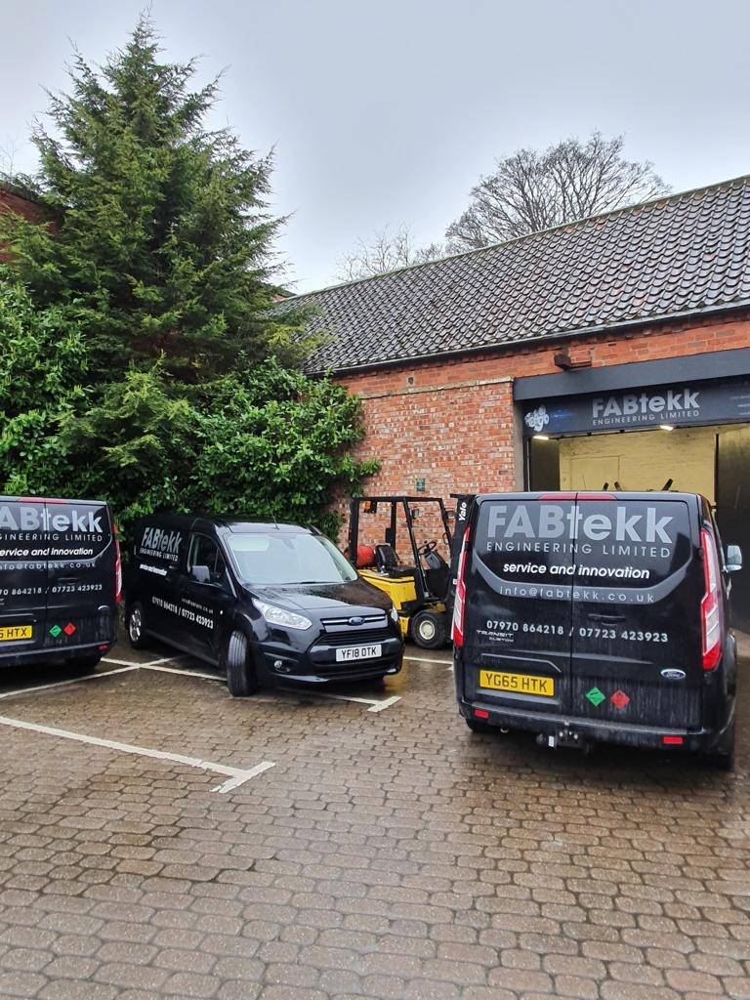
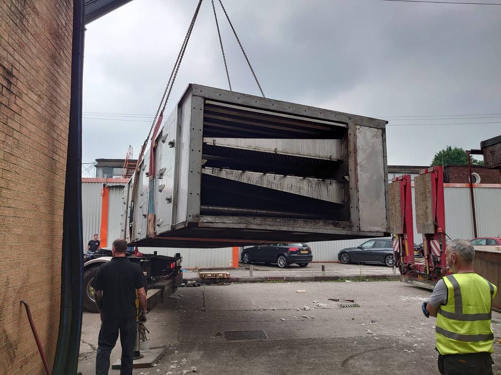
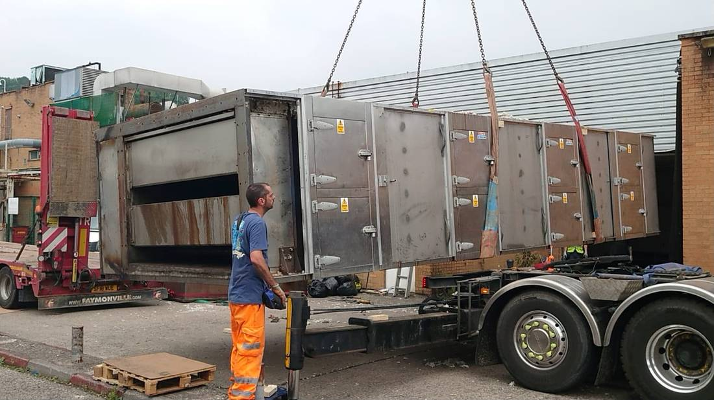
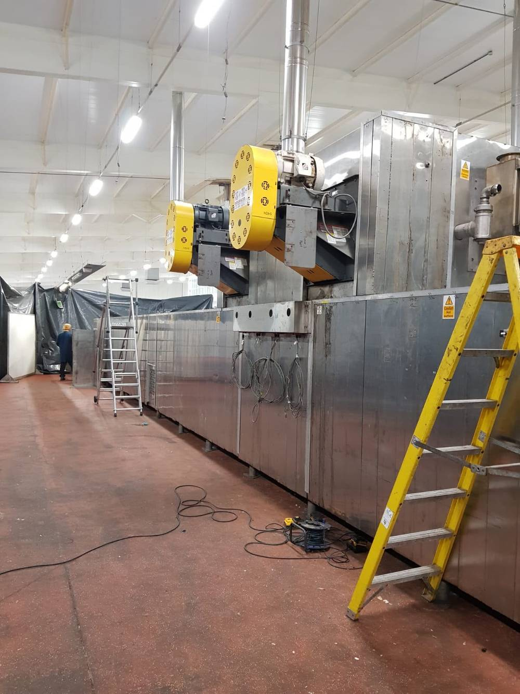
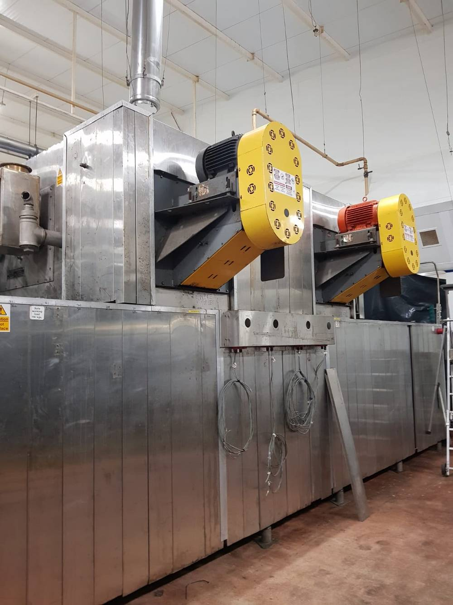
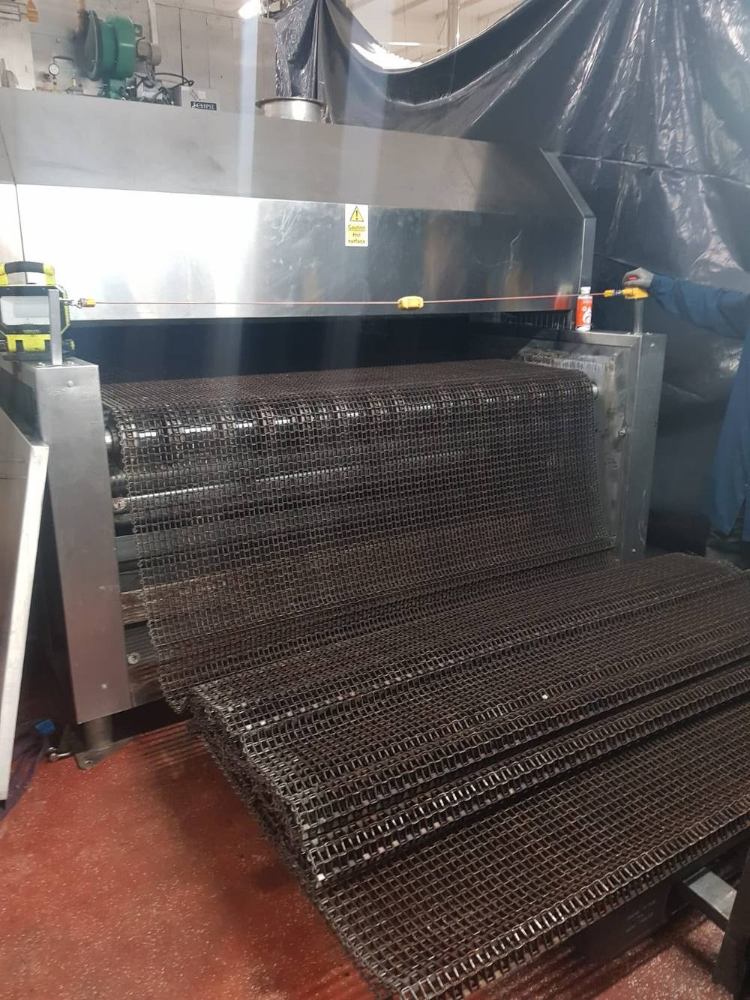
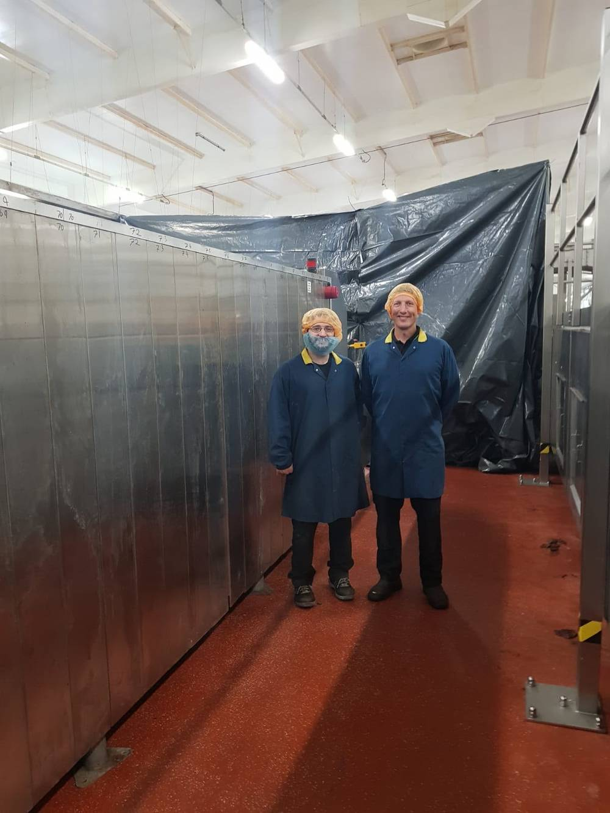
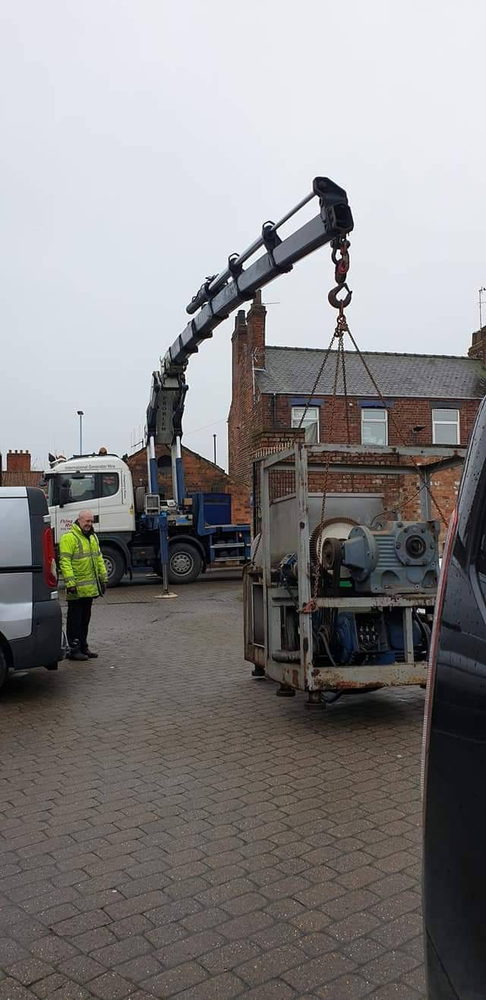
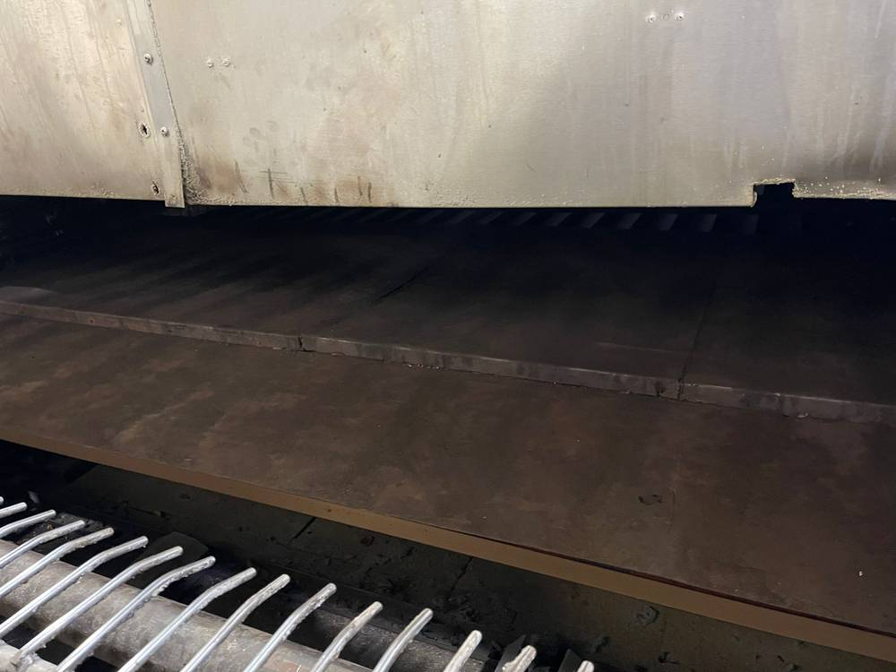

2014
Established
Food production and manufacturing engineers covering the whole of the UK — from bread dividers and moulders to ovens, conveyors and complete line installations. There's always a solution to every problem… just talk to us.
FABtekk Engineering prides itself on high standards of workmanship — supplying optimum services to exacting standards. That commitment reduces rework and downtime, giving you better productivity and efficiency in your manufacturing environment.
New components fabricated in-house at our Penrith workshop, built to fit and built to last.
Planned servicing that catches faults before they stop your line.
Breakdown response across the UK when downtime simply isn't an option.
Regular servicing and repair of bread dividers and moulders by bakery specialists.
Complete machinery moves, from crane lifts to commissioning.
Deep cleaning, refurbishment and condition inspection of production ovens.
"There's always a solution to every problem… just talk to us."
FABtekk is underpinned by a desire to deliver the best quality service to all. Our services have evolved by working closely with our customers, coupled with a genuine passion for engineering.

A complete production oven moved between operating sites: decommissioned, sectioned and craned out in Wales, transported by low loader, then rebuilt, re-banded and recommissioned in Hull — one team, start to finish.







